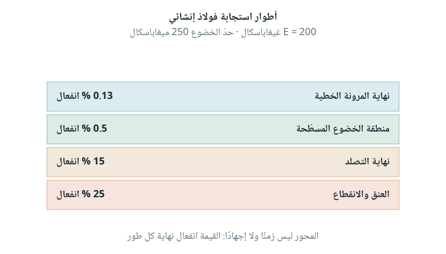

الإجهاد والانفعال ومعامل يونغ
Stress–strain relationship
الإجهاد قوة على وحدة المساحة والانفعال تشوه نسبي؛ ونسبتهما في المدى المرن هي معامل يونغ. حدّ الخضوع يبدأ عنده التشوه اللدن، وهو أساس التصميم الإنشائي.
الإجهاد مقياس داخلي للقوة على وحدة المساحة، والانفعال مقياس للتشوه النسبي. يُعرَّف الإجهاد الهندسي σ = F/A₀ نسبةً إلى المساحة الأصلية، والانفعال ε = ΔL/L₀ نسبة إلى الطول الأصلي. منحنى الإجهاد–الانفعال يوصف سلوك المادة: مدى مرن خطي، ثم خضوع، ثم تصليد، ثم عنق وانقطاع.
المرونة الخطية تعني أن الإجهاد يتناسب مع الانفعال، وثابت التناسب هو معامل يونغ E. حدّ الخضوع هو الإجهاد الذي يبدأ عنده التشوه اللدن غير القابل للاسترجاع، وهو أساس التصميم: يُبقى الإجهاد التشغيلي دونه بهامش أمان.
كيف تعمل الظاهرة؟
في المرونة تُشد روابط الذرات فتمتد مسافاتها من موضع التوازن، وتزداد طاقة الوضع خطيًّا تقريبًا في مدى صغير، ومن ميلها يأتي E. عند تجاوز الإجهاد الحرج تنزلق العيوب البلورية داخل الشبكة، فيحدث تشوه لا يعود عند رفع الحمل، وهذا هو اللدن. في المعادن المطيلة يظهر خضوع مسطّح لأن الانزلاق ينتشر في الأجسام الحبيبية، ثم تتشابك العيوب فيتصلب المعدن ويحتاج إجهادًا أعلى. أخيرًا تتجمع الفراغات في موضع واحد فيحدث العنق ويقل المقطع حتى الانقطاع.
العلاقة بالأرقام
σ = F/A₀، وε = ΔL/L₀، وE = σ/ε في المدى الخطي. للفولاذ الإنشائي E = 200 غيغاباسكال وحدّ خضوع 250 ميغاباسكال، فيكون انفعال الخضوع 250×10⁶/200×10⁹ = 0.00125 أي 0.125%. ومقاومة الشد 400 ميغاباسكال، والاستطالة عند الانقطاع 15–25%. وتحمل المادة طاقة مرنة عند حدّ الخضوع تساوي σ²/(2E) = 156 كيلوجول/م³، وهو مقياس رجوع العارضة بعد رفع الحمل. ولو ضاعفنا الطول دون تغيير المقطع، هبطت الصلابة إلى النصف لأن K = EA/L.
مفاهيم متقاربة
الخلط الأول: الإجهاد ليس القوة؛ القوة بالنيوتن والإجهاد بالباسكال، ويتضاعف الإجهاد بنصف المساحة دون تغيّر القوة. الثاني: الانفعال ليس التشوه المطلق؛ التشوه بالمليمتر والانفعال نسبة بلا وحدة. الثالث: معامل يونغ خاصية مادة لا شكل، وتغيير المقطع يغيّر الصلابة لا E. الرابع: حدّ الخضوع ليس حدّ الانكسار؛ الأول بداية اللدونة والثاني نهاية المنحنى. الخامس: الصلابة ليست المتانة؛ الفولاذ والزجاج لهما E كبير مع اختلاف هائل في السلوك عند الكسر.
حدود التطبيق
منحنى الإجهاد–الانفعال الهندسي لا يصف الحقيقي بعد العنق لأن المساحة تتغير، والإجهاد الحقيقي أعلى بكثير عند التشوه الكبير. القيم تعتمد على معدل التحميل والحرارة، فالفولاذ عند معدلات عالية أو حرارة منخفضة يتحول إلى هش. حدّ الخضوع المعلن هو حدّ 0.2% انفعال لدن للفولاذ منخفض الكربون، ويختلف للسبائك والبوليمرات واللدائن. وفي الخرسانة لا يوجد مدى خطي طويل ولا خضوع واضح، وفي المواد المركّبة لا يعني المنحنى مادة واحدة بل اتجاهات ألياف متعددة.

| الكمية | القيمة | المصدر |
|---|---|---|
| معامل يونغ للفولاذ الإنشائي | 200 غيغاباسكال | [1] |
| حدّ الخضوع للفولاذ الإنشائي | 250 ميغاباسكال | [1] |
| انفعال الخضوع المحسوب | 0.125 % | [1] |
| مقاومة الشد | 400 ميغاباسكال | [2] |
| الطاقة المرنة عند حدّ الخضوع | 156 كيلوجول/م³ | [2] |
المصادر
- 1 University Physics Volume 1 — 12.3 Stress, Strain, and Elastic Modulus — OpenStax. openstax.org/books/university-physics-volume-1/pages/12-3-stress-strain-and-elastic-modulus · اطُّلع عليه 2026-11-16
- 2 Stress and Strain — The Engineering ToolBox. www.engineeringtoolbox.com/stress-strain-d_950.html · اطُّلع عليه 2026-11-16
- 3 College Physics 2e — 5.3 Elasticity: Stress and Strain — OpenStax. openstax.org/books/college-physics-2e/pages/5-3-elasticity-stress-and-strain · اطُّلع عليه 2026-11-16
استشهد بهذا المصطلح
الصيغتان مبنيتان من بيانات الصفحة نفسها: العنوان والتاريخ ورابط النسخة المنشورة.
الإجهاد والانفعال ومعامل يونغ — Stress–strain relationship. (2026). ديوان المعرفة — انفراد. https://infiradev.com/diwan/terms/stress-strain.html
@misc{stress-strain2026,
title = {الإجهاد والانفعال ومعامل يونغ},
titleaddon = {Stress–strain relationship},
howpublished = {{ديوان المعرفة — انفراد} — مرجع علمي عربي},
year = {2026},
url = {https://infiradev.com/diwan/terms/stress-strain.html},
urldate = {2026-11-16},
note = {مراجعة علمية: مراجعة آلية — ديوان المعرفة (روابط المصادر + عقد المحتوى + وجود الرسم) 2026-11-16}
}
راجعه: مراجعة آلية — ديوان المعرفة (روابط المصادر + عقد المحتوى + وجود الرسم) 2026-11-16 · 2026-11-16 · آخر تحديث 2026-11-16